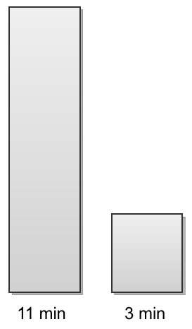
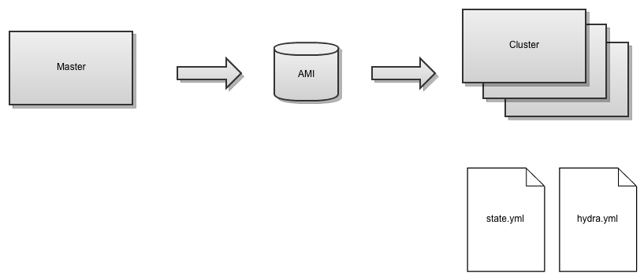

Make sure your tests run concurrently with Hydra.
Make sure your tests run on an EC2 instance.
workers: - type: ssh connect: dan@192.168.1.100 directory: /home/dan/cloud_test runners: 1

rake cloud:master:create
@compute = Fog::Compute.new( :provider => 'AWS', :aws_access_key_id => 'id', :aws_secret_access_key => 'key' )
@compute.servers.create( :name => 'my_server', :image_id => 'ami-abc123', :key_name => 'dan', :flavor_id => 'm1-small', :groups => 'dan' )
rake cloud:master:create bootstrap chef sync bundle prepare_db ami
rake cloud:cluster:create sync bundle prepare_db
rake hydra:test